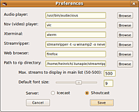
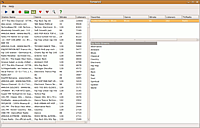
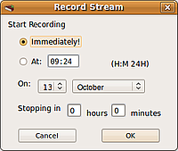

TunaPie
Dieser Artikel wurde für die folgenden Ubuntu-Versionen getestet:
Ubuntu 16.04 Xenial Xerus
Zum Verständnis dieses Artikels sind folgende Seiten hilfreich:
TunaPie  ist ein in Python verfasstes Programm, mit dem internationale Internetradio- und TV-Sender abgespielt und aufgezeichnet werden können. Es listet Sender aus der Übersicht von Icecast auf. Neben den Top-Sendern lassen sich auch einige Genre-Kategorien aufrufen. Zur Wiedergabe wird standardmäßig Audacious (Audio) und VLC (Video) verwendet. Die Aufnahmefunktion basiert auf Streamripper, damit sind auch zeitgesteuerte Aufnahmen möglich. "TunaPie" heißt wörtlich übersetzt "Thunfisch-Pastete", aber es ist wohl eher als Akronym für "Tuner in Python" zu verstehen.
ist ein in Python verfasstes Programm, mit dem internationale Internetradio- und TV-Sender abgespielt und aufgezeichnet werden können. Es listet Sender aus der Übersicht von Icecast auf. Neben den Top-Sendern lassen sich auch einige Genre-Kategorien aufrufen. Zur Wiedergabe wird standardmäßig Audacious (Audio) und VLC (Video) verwendet. Die Aufnahmefunktion basiert auf Streamripper, damit sind auch zeitgesteuerte Aufnahmen möglich. "TunaPie" heißt wörtlich übersetzt "Thunfisch-Pastete", aber es ist wohl eher als Akronym für "Tuner in Python" zu verstehen.
Installation¶
TunaPie ist in den Paketquellen vorhanden. Folgende Pakete müssen installiert[1] werden:
tunapie (universe)
streamripper (universe)
 mit apturl
mit apturl
Paketliste zum Kopieren:
sudo apt-get install tunapie streamripper
sudo aptitude install tunapie streamripper
Optional:
audacious (universe, Audio-Wiedergabe)
vlc (multiverse, Video-Wiedergabe)
mit apturl
Paketliste zum Kopieren:
sudo apt-get install audacious vlc
sudo aptitude install audacious vlc
Es können auch andere Audio- und Video-Player verwendet werden.
Manuelle Installation¶
Dazu ist zunächst die Installation des Pakets
python-wxversion
mit apturl
Paketliste zum Kopieren:
sudo apt-get install python-wxversion
sudo aptitude install python-wxversion
nötig. Die neueste Version tunapie-2.1.xx.tar.gz  herunterladen, das Archiv entpacken[2] und das install.sh-Skript in einem Terminal[3] mit Root-Rechten[4] ausführen:
herunterladen, das Archiv entpacken[2] und das install.sh-Skript in einem Terminal[3] mit Root-Rechten[4] ausführen:
sudo sh install.sh
Ein einfaches Paket lässt sich mit dem Befehl
sudo checkinstall install.sh
erstellen und installieren (siehe auch Installationsskripte).
Wer Wert auf unzensierte TV-Programme legt, kann das Installations-Skript mit dem Zusatz --adult ausführen. Die Version aus den Paketquellen zeigt bestimmte TV-Sender/Genres nicht an.
Benötigte Abhängigkeiten zum Kompilieren müssen ggfs. noch installiert werden:
Befehl zum Installieren der Build-Abhängigkeiten:
sudo apt-get build-dep tunapie
sudo aptitude build-depends tunapie
Das Programm findet sich dann im GNOME-Menü unter "Anwendungen -> Unterhaltungsmedien -> Tunapie"[5].
Konfiguration¶
 Um das Programm zu konfigurieren, werden unter "File -> Preferences" die gewünschten Angaben gemacht. Standardmäßig verwendet TunaPie Audacious für die Audio- und VLC für die Video bzw. TV-Wiedergabe. Hier können die eigenen Vorlieben eingetragen werden (der Video-Player muss allerdings .nvs-Dateien wiedergeben können). Außerdem lässt sich ein Startbefehl für Streamripper und das Verzeichnis für Aufnahmen festlegen (voreingestellt ist das verborgene Verzeichnis ~/.tunapie/streamripper).
Um die Informationen zu den Sendern anzuzeigen, wird ein Webbrowser benötigt (Standard ist Firefox). Im Hauptverzeichnis ("main list") können von 50 bis zu 500 Sender angezeigt werden; mit den Checkboxen ganz unten wird festgelegt, welche Quelle verwendet werden soll: SHOUTcast (derzeit nicht möglich) oder Icecast. Beide funktionieren leider nicht gleichzeitig, und ein Wechsel ist nur hier möglich. Auch die Schriftgröße, die im Browserfenster von TunaPie verwendet wird, lässt sich hier anpassen (die standardmäßig eingestellte Größe ist relativ klein). Alternativ lässt sich auch die Datei ~/.tunapie/prefs anpassen.
Bedienung¶
 Die Bedienung ist einfach: den gewünschten Sender markieren und mit "Play" abspielen, mit "Stop" beenden. TunaPie startet einen externen Player, mit dem der Stream (wenn er gefunden wird) wiedergegeben wird. Mit dem "Radio" bzw. "TV"-Knopf lässt sich das "Medium" wechseln. Das "Herz" in der Leiste befördert den markierten Sender auf die Lieblingsliste ("Favourites"), das "gebrochene Herz" entfernt ihn wieder.
Mit "Search" lässt sich die Senderliste nach Schlagworten durchforsten. "Info" öffnet ein Fenster mit Angaben zum momentan wiedergegebenen Sender. Von dort aus kann dann über eine weitere "Info"-Taste die dazugehörige Webseite aufgerufen werden. Eine Auswahl an Sendern lässt sich nach den vorgegebenen Genre-Angaben rechts im Hauptfenster anzeigen. Mit "File -> Reload" wird die Liste aktualisiert. Das ist ggf. nötig, wenn Sender nicht wiedergegeben werden können. Die Sortierung der Sender erfolgt zunächst nach der Anzahl der Zuhörer!
Aufnahmen¶
 Ein Druck auf die Aufnahme-Taste öffnet einen Dialog, in dem festgelegt werden kann, zu welcher Uhrzeit die Aufnahme beginnen soll (24-Stunden-Format in der Form "21:03" angeben), zu welchem Datum und wie lange aufgenommen werden soll. Wird "Immediately!" ausgewählt, startet die Aufnahme sofort, und wird erst mit Beenden des dazu aufgerufenen Streamrippers abgebrochen. Im Reiter "File -> Record Queue" kann man die anstehenden Aufnahmen verwalten.
Die einzelnen Titel werden von Streamripper als .mp3-Dateien nach dem Muster Künstler - Titel.mp3 im ausgewählten Verzeichnis abgelegt. Bei manchen Streams wird auch der Albumname mit übertragen, dann taucht im Namen nach dem Künstler auch das Album auf. Die Benennung ist aber grundsätzlich vom Sender abhängig: nur wenn eine eindeutige Identifizierung übertragen wird, kann diese nicht nur im Dateinamen, sondern auch im ID3-Tag vermerkt werden (Ausnahme: der Albumname wird nicht nach ID3 übernommen).
Bei Bedarf können ID3-Tags mit Programmen wie EasyTAG oder Audio Tag Tool nachbearbeitet werden. Ein nachträgliches, verlustfreies Schneiden ist mit mp3splt möglich.
Einige Streamripper-Versionen rippen Videos als .mp3-Dateien. Diese müssen ggf. nach der Aufnahme manuell zu .nvs-Dateien umbenannt werden, um sie dann korrekt abspielen zu können.
Beenden aller Anwendungen¶
Da TunaPie externe Programme verwendet, läuft der Sender im Abspielprogramm auch nach Beenden des Hauptprogramms unbegrenzt weiter. Dies betrifft ebenfalls eine Aufnahme, wenn keine konkreten Zeitangaben gemacht wurden. Wer mit dem Beenden von TunaPie auch die externen Programme schließen möchte, kann dies mittels eines kleinen Skriptes erreichen, mit dem TunaPie gestartet wird:
1 2 3 4 5 | #!/bin/bash tunapie killall streamripper killall audacious exit |
Das Skript in einen Editor[6] kopieren, unter einem aussagekräftigem Namen (z.B. TunapieKill.sh) abspeichern, ausführbar machen[7] und starten. Wer möchte, kann sich den Startbefehl auch im Hauptmenü[8] hinterlegen und das Programm so aufrufen. Der verwendete Player muss im Skript ggf. natürlich angepasst werden.
Problembehebung¶
SHOUTcast¶
Bedingt durch Änderungen bei SHOUTcast funktioniert der Zugriff seit Ende 2010 nicht mehr (Fehlerbericht ).
 Übersichtsartikel
Übersichtsartikel- Erstellt mit Inyoka
-
 2004 – 2017 ubuntuusers.de • Einige Rechte vorbehalten
2004 – 2017 ubuntuusers.de • Einige Rechte vorbehalten
Lizenz • Kontakt • Datenschutz • Impressum • Serverstatus -
Serverhousing gespendet von